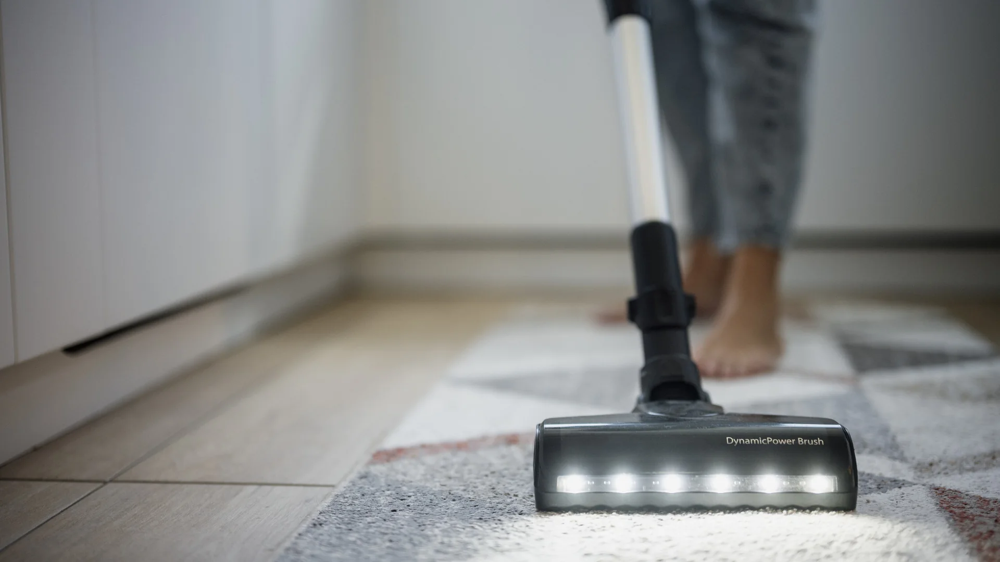
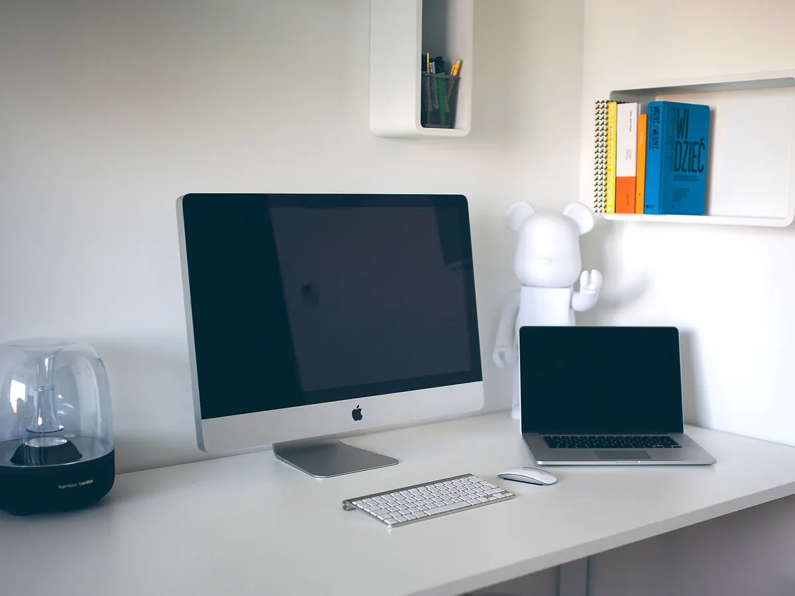

RUT-registrerade · Stockholm sedan 2016
Fast pris på städning — RUT-avdraget hanteras åt dig
Flyttstäd kostar 649 kr i timmen före RUT, hemstäd 549 kr. En 3:a på 72 m² tar 9,5 timmar och landar på 3 082,75 kr efter avdrag.
Uppdragsprotokoll 2025-1240 · Södermalm
TjänstFlyttstäd 68 m²
Arbetstid9 timmar
Pris före RUT5 841 kr
Pris efter RUT2 920,50 kr
RUT-avdrag klartSignerat av kund 14 september, 12 minuter efter avslutat arbete. 34 foton bifogade i checklistan.
Siffror från 2025
1 240
uppdrag 2025
24
anställda
4,9
av 5 i snittbetyg
2 tim
offert inom 2 timmar

Fem tjänster med fast pris
Timpriset ligger fast per tjänst. Du får ett pris på hela uppdraget, inte ett spann.
Flyttstäd
Hela bostaden gås igenom innan du lämnar nycklarna. Ugn, kylskåp, karmar och fönster ingår i 649 kr i timmen.
Från 2 433,75 kr efter RUT (55 m², 7,5 timmar)
Hemstäd
Återkommande städ varannan eller var fjärde vecka med samma team. En 55 m² lägenhet tar 2,5 timmar, alltså 686,25 kr per tillfälle efter RUT.
686,25 kr per tillfälle efter RUT (55 m²)
Storstädning
Inför försäljning, inflyttning eller efter renovering. 75 m² tar 5 timmar och kostar 1 497,50 kr efter RUT, med fönster och vitvaror invändigt.
1 497,50 kr efter RUT (75 m², 5 timmar)
Fönsterputs
Karm, båge och spröjs torkas på båda sidor. 15 bågar i en villa kostar 1 185 kr före RUT och 592,50 kr efter avdrag.
79 kr per båge · minsta debitering 1 200 kr
Kontorsstäd
Kontor, butik och trapphus med avtalad frekvens och namngiven teamledare. Timpriset är 449 kr exkl. moms, och RUT gäller inte företag.
5 388 kr per månad exkl. moms (120 m², 2 gånger i veckan)
Det här ingår i varje uppdrag
Checklistan är densamma för flyttstäd, hemstäd och storstädning. Punkt 11 och 12 är det kunder hör av sig om oftast.
Golv och ytor
- Dammsugning och moppning av samtliga golvytor, inklusive under sängar och soffor
- Dammtorkning av lister, fönsterbleck, dörrkarmar och garderobsöverkanter
- Avtorkning av kontakter, strömbrytare, handtag och räcken
- Fönster putsade invändigt med båge, karm och spröjs i hela bostaden
Kök och badrum
- Kök utvändigt: bänkskivor, skåpsluckor, fläktfilter, spis och bakom knoppar
- Ugn invändigt 350 kr och kylskåp invändigt 250 kr som tillägg vid flyttstäd
- Badrum: dusch, tvättställ, WC, kakel, klinker och avloppssil
- Avkalkning av blandare, duschslang och glasvägg
Efter arbetet
- Sopor och återvinning burna ner till soprummet
- Egen utrustning och Svanenmärkta medel, inget behöver köpas in eller lånas
- Digitalt protokoll med checklista, tidsstämplar och foton, signerat av dig på plats
- Omstädning utan kostnad inom 48 timmar om något missats
- Ansvarsförsäkrad personal med kollektivavtal och RUT-registrering hos Skatteverket
Prisexempel
Siffrorna nedan är hela uppdrag, inte timpriser. Hemstäd räknas på 549 kr i timmen före RUT.
| Tjänst | Yta | Tid | Pris före RUT | Efter RUT |
|---|---|---|---|---|
| Flyttstäd | 55 m², 2 rum + kök | 7,5 h | 4 867,50 kr | 2 433,75 kr |
| Flyttstäd | 72 m², 3 rum + kök | 9,5 h | 6 165,50 kr | 3 082,75 kr |
| Flyttstäd | 95 m², 4 rum + kök | 12,5 h | 8 112,50 kr | 4 056,25 kr |
| Hemstäd varannan vecka | 55 m² | 2,5 h | 1 372,50 kr | 686,25 kr |
| Hemstäd varannan vecka | 75 m² | 3,5 h | 1 921,50 kr | 960,75 kr |
| Hemstäd varannan vecka | 95 m² | 4,5 h | 2 470,50 kr | 1 235,25 kr |
| Storstädning | 75 m² | 5 h | 2 995 kr | 1 497,50 kr |
| Fönsterputs villa | 15 bågar | — | 1 185 kr | 592,50 kr |
| Fönsterputs, minimidebitering | 8 bågar | — | 1 200 kr | 600 kr |
| Kontorsstäd, 2 ggr/vecka | 120 m² | 12 h/mån | 5 388 kr/mån exkl. moms | Ingen RUT för företag |
Dra i tabellen i sidled för att se alla kolumner. På telefon visas varje rad som ett kort med etikett.
Flyttstäd tar cirka 8 minuter per kvadratmeter och debiteras minst 4 timmar. Tillägg: balkong 200 kr, förråd 150 kr.
Räkna ut priset efter RUT
Avdraget är 50 procent av arbetskostnaden, max 50 000 kr per person och år. Du betalar halva priset direkt och vi sköter redovisningen till Skatteverket. RUT gäller privatpersoner, inte företag.
7,5 timmar arbetstid
4 867,50 kr före RUT
2 433,75 kr efter RUT
Räknesnurran ger en uppskattning. Exakt pris bekräftas i offerten.
Så funkar det
Tre steg från förfrågan till signerat protokoll. Offerten är bindande i 14 dagar.
-
Boka med adress och yta
Fyll i gata, kvadratmeter och önskat datum i formuläret längst ner, eller ring +46 70 494 90 87 under vardagar 07–18. Priset räknas ut på yta och tjänst, inte på hur jobbet känns den dagen.
-
Bekräftat pris och tid
Offerten kommer via e-post inom 2 timmar på vardagar, med timmar, tillägg och pris efter RUT utskrivet. Bokad tid har 30 minuters marginal, så förseningar äter inte av din städtid.
-
Protokollet signeras efteråt
Teamet går igenom checklistan med dig när arbetet är klart. Protokollet med tidsstämplar och foton skickas till din e-post och är ditt underlag om något skulle ifrågasättas i efterhand.
Teamet bakom

24 anställda, kollektivavtal och ansvarsförsäkring
Teamet består av 24 anställda med kollektivavtal, ansvarsförsäkring och utbildning i RUT-reglerna. Samma personer kommer tillbaka vid återkommande städ, och varje uppdrag leds av en namngiven teamledare.
Medlen vi använder är Svanenmärkta, vilket betyder att de är godkända för hemmiljö och inte kräver luftning efteråt. Mer om hur arbetet läggs upp finns på om oss.
Omdömen från kunder
4,9 av 5 i snittbetyg från 1 240 uppdrag under 2025.
Flyttstäd på Södermalm
Bokade 10 dagar innan tillträdet och fick ett fast pris direkt. Teamet kom 08:00, gick igenom ugn och kylskåp först och var klara 17:00. Protokollet med 41 foton låg i inkorgen samma kväll och mäklaren hade inga anmärkningar på besiktningen.
Karin L.
Flyttstäd 72 m², Södermalm
Hemstäd i Solna
Samma två personer varannan vecka, vilket gör att de hittar nyckellådan utan instruktioner. Fakturan landar på 960,75 kr per tillfälle efter RUT, exakt som offerten sade. Har aldrig behövt ringa och påminna om något.
Johan E.
Hemstäd 75 m², Solna
Storstädning efter renovering
Renoveringen lämnade byggdamm i varenda karm. Fem timmar och 2 995 kr före RUT senare var fönstren putsade på båda sidor och klinkersen fri från fogmassa. Besiktningen dagen efter gick igenom utan kommentar.
Maria T.
Storstädning 75 m², Nacka
Medel och utrustning ingår
Städvagn, moppar, mikrofiberdukar och Svanenmärkta medel följer med till varje uppdrag. Du behöver inte handla något, och vi lånar inte din dammsugare.

Rum och ytor i uppdragen
Bilderna är exempel på rum och ytor som checklistan täcker, inte foton från egna kunduppdrag. Samma ytor räknas in i priset oavsett adress: flyttstäd 649 kr i timmen och cirka 8 minuter per kvadratmeter, hemstäd 549 kr i timmen.



Vanliga frågor
Svaren nedan gäller privatkunder i Stockholm, Solna, Sundbyberg, Nacka, Täby, Danderyd, Bromma och Farsta.
Vad kostar en flyttstäd av en 3:a?
En 3:a på 72 m² tar 9,5 timmar och kostar 6 165,50 kr före RUT. Efter avdraget landar fakturan på 3 082,75 kr. Yta och antal rum styr priset, och du får den exakta siffran i offerten.
Hur räknas RUT-avdraget?
Du får 50 procent avdrag på arbetskostnaden, max 50 000 kr per person och år. Du betalar halva priset direkt och vi redovisar avdraget till Skatteverket. RUT gäller privatpersoner, inte företag.
Kan jag avboka?
Avboka fram till 24 timmar före bokad tid utan kostnad. Vid senare avbokning debiteras en timme enligt tjänstens timpris, 649 kr för flyttstäd och 549 kr för hemstäd. Om du flyttar bokningen i stället behåller offerten sitt pris i 14 dagar.
Tar ni med egna städmedel?
Ja. Städvagn, moppar, mikrofiberdukar och Svanenmärkta medel ingår i priset. Du behöver inte köpa något eller låna ut din dammsugare, och vid ugn och kylskåp invändigt använder vi egna medel som inte lämnar lukt efter sig.
Vad händer om jag inte är nöjd?
Anmäl inom 48 timmar, så kommer samma team tillbaka och städar om utan kostnad. Protokollet med foton och tidsstämplar visar exakt vad som gjordes och när. Kvarstår felet efter omstädningen täcks skadan av vår ansvarsförsäkring.
Boka flyttstäd, hemstäd eller fönsterputs
Skriv adress, yta och datum. Offerten kommer via e-post inom 2 timmar på vardagar och är bindande i 14 dagar.
Bokar du hellre per telefon? Ring +46 70 494 90 87 eller mejla vberg024@gmail.com. Vardagar 07–18, lördag 09–14.
Redo att boka?
Skicka adress och kvadratmeter. Du har ett fast pris efter RUT i inkorgen inom 2 timmar på vardagar, och protokollet med foton efter varje uppdrag.
Boka tid